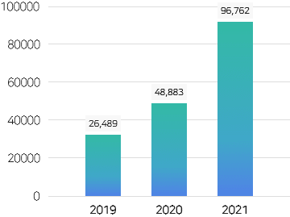

지속가능경영
ESG경영
중대성 평가 우선순위 이슈
환경경영시스템 인증현황
중대성 평가 우선순위 이슈
동부건설은 기업활동에 수반되는 모든 환경영향을 최소화 하기 위한 체제를 구축하여 1996년에 ISO 14001 규격을 취득하여 현재까지 유지하고
있습니다.
KS I ISO 14001:2015
이사회 역량 구성표(Board Skills Matrix)
- 글로벌
이니셔티브 -
동부건설은 지속가능한 녹색건설을 위하여 지구온난화, 탄소중립, 폐기물 발생 등 글로벌 사회가 직면하고 있는 기후위기,
환경오염 등의 문제를 개선하기 위하여 노력하고 있습니다. UN에서 채택한 SDGs(Sustainable Development Goals)의 주요
핵심원칙들을 당사의 경영활동에 반영하였으며, 앞으로도 환경, 사회, 지배구조 등 다양한 글로벌 이니셔티브에 적극적으로
참여하는 등 ESG경영에 앞장서고 실천하는 기업이 되겠습니다.- 안전보건 법적 요구사항 준수
- 안전보건경영시스템 지속적 개선
- 유해·위험요인 제거 및 리스크 감소
- 안전하고 쾌적한 작업환경 조성
- 종사자의 참여 및 협의 보장
※ 2022년 기준
| 구분 | 성명 | 직책 | 선임일 | 임기 | 주요 경력 | 이사회 내 위원회 | 비고 |
|---|---|---|---|---|---|---|---|
| ESG 위원회 | |||||||
| 사내 이사 | 허상희 | 부회장 | 2023.03.23 | 1년 | - | 이사회 의장 (남) |
|
| 윤진오 | 대표이사 | 2023.03.23 | 1년 | - | (남) | ||
| 변재환 | 본부장 | 2023.03.23 | 1년 | - | (남) | ||
| 사외 이사 | 백규석 | 사외이사 | 2023.03.23 | 2년 | - | ● | (남) |
| 김삼열 | 사외이사 | 2023.03.23 | 2년 | - | ○ | (남) |
* 2022년도부터 계획 수립
** 집약도 : 매출액 1억원당 발생량·사용량
| 평가연도 | 평가실적 | 개선요구 사항 발굴 및 조치건수 | |||
|---|---|---|---|---|---|
| 대상현장 | 평가횟수 | 전체 | 현장분야 | 행정분야 | |
| 2022년 | 70개 | 122회 | 3,622건 | 1,735건 | 1,887건 |
| 사내 이사 | 허상희 | |
|---|---|---|
| 사내 이사 | 허상희 | |
| 사내 이사 | 허상희 |
| NO. | 이슈사항 | 사회적 관심도 |
비즈니스 영향도 |
|---|---|---|---|
| 1 | 안전 및 보건활동, 중대재해발생 Zero | 4.21 | 4.54 |
| 2 | 환경법규 준수 | 3.96 | 4.22 |
| 3 | 품질경영, 하자발생 최소화 | 3.88 | 4.26 |
| 4 | 고객만족도 향상, 소비자보호 | 3.92 | 4.08 |
| 5 | 인적자원관리, 임직원 교육 | 3.69 | 4.34 |
| NO. | 이슈사항 | 사회적 관심도 |
비즈니스 영향도 |
|---|---|---|---|
| 1 | 안전 및 보건활동, 중대재해발생 Zero | 4.21 | 4.54 |
| 2 | 환경법규 준수 | 3.96 | 4.22 |
| 3 | 품질경영, 하자발생 최소화 | 3.88 | 4.26 |
| 4 | 고객만족도 향상, 소비자보호 | 3.92 | 4.08 |
| 5 | 인적자원관리, 임직원 교육 | 3.69 | 4.34 |
- 주요 환경 지표
-
동부건설은 본사와 현장, 기타 사업장의 환경과 관련된 지표를 관리하고 있으며, 주요 사항은 다음과 같습니다.
-
온실가스 배출량 (본사 및 사업장, CO2-eq(ton))
alksjdfksak업장의 환경과 관련된 지표를 관리업장의 환경과 관련된 지표를 관리업장의 환경과 관련된 지표를 관리업장의 환경과 관련된 지표를 관리업장의 환경과 관련된 지표를 관리업장의 환경과 관련된 지표를 관리업장의 환경과 관련된 지표를 관리업장의 환경과 관련된 지표를 관리업장의 환경과 관련된 지표를 관리업장의 환경과 관련된 지표를 관리


-
에너지 사용량 (본사 및 사업장, TJ)

-
폐기물 처리 실적 (톤)


-
용수 사용량 (㎥)

-
온실가스 배출량 (본사 및 사업장, CO2-eq(ton))
-
Q.01
Q. 명절에 팀장이 업체에서 받은 상품권을 직원들에게 나누어 주었습니다.
어떤 거래회사에서 받았는지 알 수는 없지만 팀장이 주는 것이라 거절할 수도 없고 고민이 되는데 받아도 괜찮은가요?A. 팀장이 거래업체에서 상품권 등을 받아 직원에게 주었다면 일차적으로 팀장이 실천강령을 위반했다고 할 수 있습니다.
그러나 이를 받은 직원도 실천강령을 위반하는 것이 되므로 경영지도팀에 신고해야 합니다. -
Q.02
Q. 체육대회, 등산 등 사내행사가 있을 경우에 거래회사로부터
찬조금품(상품,음료수,주류 등)를 받는 경우가 있는데, 실천강령에 위반되는지요?A. 거래회사로부터 찬조금품을 받는 것은 실천강령에 위반됩니다.
찬조금품을 받았으면 회사의 윤리경영 취지를 설명하고 되돌려 주어야 합니다.
회사 예산 범위 내에서 간소하게 행사를 치르는 관행을 정착시키고 특히 찬조금품을 받기 위해 의도적으로 거래회사에 얘기하여 부담을 주는 행위는 금해야 합니다 -
Q.03
Q. 삼촌이 금번에 제가 관리하는 협력업체에 취직을 하셨습니다.
거리낌 없이 회사에서 자주 만나게 되고 그로 인하여 설계변경이나 단가인상 등을 자연스럽게 요구합니다. 어떻게 해야 하나요?A. 공정한 직무수행이 어렵다고 판단될 경우, 팀장 또는 경영지도팀과 당해 직무에 대한 회피여부에 대해 상담한 후 처리하시면 됩니다. -
Q.04
Q. 현장에서 야근이나 특별한 일을 처리한 후, 직원 상호간에 친목도모나 일의 성취감을 느끼기 위하여 회식을 하였습니다.
이럴 경우 비용처리는 어떻게 하는지요?A. 모든 부서의 예산범위 내에서 부서장의 승인을 받으면 무방합니다.
- 윤리경영
실천지침 - 윤리경영 실천지침은 윤리규정에 대한 구체적 지침으로 임직원들의 가치판단 및 행위기준 역할을 부여함으로써, 윤리규정 및 윤리경영의 실현에 이바지 한다.
sub_tab2
sub_tab3
sub_tab4